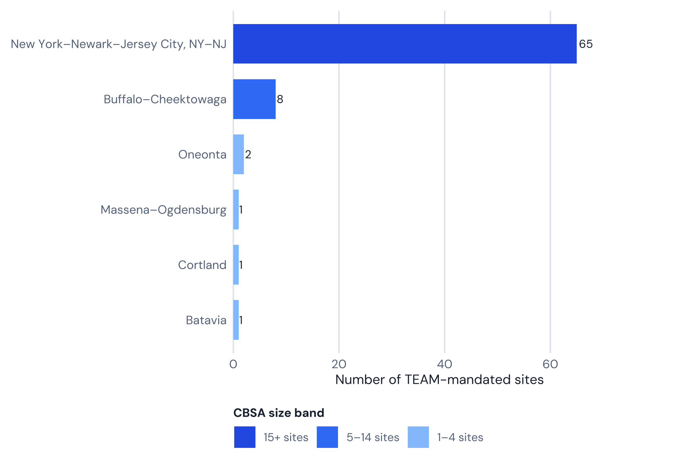
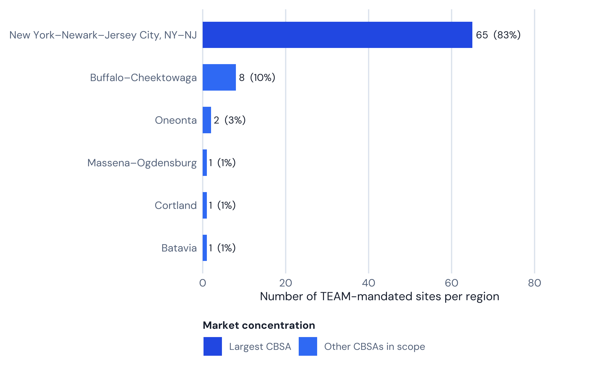

| Signal | Value | Why it matters |
|---|---|---|
| Mandated hospitals | 78 | Largest single-state TEAM market |
| CBSAs | 6 | Largest CBSA: New York–Newark–Jersey City, NY–NJ ( 65 hospitals) |
| Medicare beneficiaries | Not computed in this pipeline | Covered-lives scale |
| HRRP (all conditions) | 48.7% vs 48.1% national | Readmission pressure under episode accountability |
| Est. annual LEJR | Not published at hospital level | Volume concentration |
CMS TEAM in New York: 78 Mandated Hospitals, the Nation’s Largest Bundled-Payment Market
New York carries the second-largest state roster in CMS’s Transforming Episode Accountability Model. What the live CMS roster and readmissions data actually show — including where the state outperforms the national average.

White paper
CMS TEAM in New York: 78 Mandated Hospitals, the Nation’s Largest Bundled-Payment Market
78 mandated hospitals · 6 CBSAs · Performance Year 2 begins January 2027
Rainfall white paper · Narration
Listen while you read
Methodology. Hospital counts, CBSA breakdowns, figures 1–2, and the readmissions comparison recompute on render from vendored CMS data (the TEAM participant list and HRRP dataset 9n3s-kdb3, joined by CCN). Episode-dollar and Medicare-population figures are not invented here; where this repo has no verified source, the report says so rather than repeating an unsourced estimate.
01 · At a glance
Live hospital counts come from data/territoryHospitals.json (March 2026 CMS TEAM participant extract). The HRRP row below is computed at render time from the CMS HRRP dataset (9n3s-kdb3) joined to this scope’s roster by CCN; Medicare-population and per-episode LEJR figures are not published at hospital level, so this report states that rather than estimating them.
02 · Where the mandate sits
Largest market in this scope: New York–Newark–Jersey City, NY–NJ (65 hospitals).

| CBSA | Hospitals | Share (%) |
|---|---|---|
| New York–Newark–Jersey City, NY–NJ | 65 | 83.3 |
| Buffalo–Cheektowaga | 8 | 10.3 |
| Oneonta | 2 | 2.6 |
| Batavia | 1 | 1.3 |
| Cortland | 1 | 1.3 |
| Massena–Ogdensburg | 1 | 1.3 |

03 · Guide narrative (from the website TEAM report)
Takeaways
- 78 hospitals mandated — second nationally
- 65 in New York–Newark–Jersey City metro
- New York’s HRRP excess-readmission rate is essentially at the national baseline, not meaningfully worse
- NYU Langone, Mount Sinai, Montefiore in scope
- Hip/knee replacement is TEAM’s core procedure category, and New York’s hip/knee readmission rate runs below the national rate
New York and the TEAM mandate: market scope and stakes
New York State has 78 hospitals mandated to participate in the CMS Transforming Episode Accountability Model across six Core-Based Statistical Areas, making it the second-largest TEAM state in the country behind California. TEAM covers five episode categories — lower extremity joint replacement (LEJR), surgical hip/femur fracture treatment, spinal fusion, major bowel procedures, and coronary artery bypass graft — but CMS does not publish hospital-level episode volumes, so this report does not model a New York-specific episode count.
The geographic concentration is striking. Sixty-five of the 78 mandated hospitals — 83% of the state total — are located within the New York–Newark–Jersey City, NY–NJ metropolitan CBSA, the nation’s largest metropolitan bundled-payment market. This multi-state CBSA also contains all 44 mandated New Jersey hospitals, creating a shared post-acute ecosystem spanning two states, five boroughs, and suburban markets from Long Island to Westchester to northern New Jersey.
New York’s hospital market is among the most structurally complex in the country. Large nonprofit health systems (Northwell Health, Mount Sinai Health System, NYU Langone, NewYork-Presbyterian, Montefiore) coexist with city-operated public hospitals (NYC Health + Hospitals), academic medical centers, and smaller community facilities. This heterogeneity shapes TEAM performance unevenly: across the CMS HRRP dataset, New York’s TEAM-mandated hospitals as a group post a hip/knee excess-readmission rate below the national average, but individual large systems still show pockets of elevated risk — Mount Sinai West and Mount Sinai South Nassau both post hip/knee ERRs above 1.25, among the highest in the state’s roster.
(Source: Centers for Medicare & Medicaid Services (2026); Rainfall Health analysis.)
Fast facts
- 78 hospitals mandated (March 2026 CMS list)
- 6 CBSAs: New York–Newark–Jersey City (65), Buffalo–Cheektowaga (8), Oneonta (2), Batavia (1), Cortland (1), Massena–Ogdensburg (1)
- CMS does not publish hospital-level LEJR episode volumes; this report does not estimate one for New York
- 48.7% of NY hospital-condition pairs in the CMS HRRP file exceed ERR 1.0 — essentially at the 48.1% national rate, not meaningfully worse
- New York’s hip/knee-replacement ERR is below the national rate: 24.4% of NY hip/knee pairs exceed 1.0, versus 47.9% nationally
- Top health systems by roster presence: Northwell Health, Mount Sinai, NYU Langone, Montefiore, NewYork-Presbyterian, NYC Health + Hospitals
Market context
The state’s hospital market is dominated by large nonprofit systems that depend on Medicare as a primary revenue source, making TEAM’s financial implications consequential for the sector. This repo does not carry a verified per-state Medicare beneficiary count, so that figure is omitted rather than estimated.
Hospital costs in the New York metropolitan area are widely reported to run above national benchmarks, driven by labor costs, real estate expenses, and the density of academic and specialty care. CMS sets TEAM target prices using each hospital’s own historical spending blended with regional benchmarks, so a hospital’s own cost structure is partially reflected in its target; the 2.0% discount factor CMS applies to LEJR, SHFFT, and spinal fusion targets still creates a gap that must be closed through care coordination, not just baseline cost levels.
A landmark JAMA study by Dummit et al. (2016) analyzing the predecessor Comprehensive Joint Replacement (CJR) model — which also included New York markets — found that participating hospitals reduced episode payments by an average of $864 per episode in the first performance year. Finkelstein et al. (2021), analyzing mandatory bundled payments in lower extremity joint replacement, found that discharge to institutional post-acute care declined significantly under mandatory programs. Neither study isolates a New York-specific effect; they are cited here as the relevant evidence base for what mandatory bundling has done elsewhere, not as New York figures.
(Source: Dummit et al. (2016), JAMA 316(12).) (Source: Finkelstein et al. (2021), JAMA 325(18).)
Complete hospital directory by CBSA
The following table lists every CMS TEAM-mandated hospital in New York, organized by Core-Based Statistical Area, generated at render time from the same live roster used for the counts above — so it cannot drift out of sync with them or omit a participant.
| CBSA | Hospitals | Hospitals in this CBSA |
|---|---|---|
| New York–Newark–Jersey City, NY–NJ | 65 | Bellevue Hospital Center · Bronxcare Hospital Center · Brookdale Hospital Medical Center · Brooklyn Hospital Center - Downtown Campus · Elmhurst Hospital Center · Flushing Hospital Medical Center · Glen Cove Hospital · Good Samaritan Hospital Medical Center · Good Samaritan Hospital of Suffern · Harlem Hospital Center · Helen Hayes Hospital · Hospital for Special Surgery · Hudson Valley Hospital Center · Huntington Hospital · Jacobi Medical Center · Jamaica Hospital Medical Center · John t Mather Memorial Hospital of Port Jefferson · Kings County Hospital Center · Lenox Hill Hospital · Lincoln Medical & Mental Health Center · Long Island Community Hospital · Long Island Jewish Medical Center · Maimonides Medical Center · Mercy Medical Center · Metropolitan Hospital Center · Montefiore Medical Center · Montefiore Mount Vernon Hospital · Montefiore New Rochelle Hospital · Mount Sinai Beth Israel · Mount Sinai Hospital · Mount Sinai South Nassau · Mount Sinai West · n y Eye and Ear Infirmary · Nassau University Medical Center · New York Community Hospital of Brooklyn, Inc. · New York-Presbyterian Hospital · New York-Presbyterian/Queens · North Shore University Hospital · Northern Westchester Hospital · Nyack Hospital · Nyu Langone Hospitals · Peconic Bay Medical Center · Phelps Hospital · Plainview Hospital · Putnam Hospital Center · Queens Hospital Center · Richmond University Medical Center · South Brooklyn Health · South Shore University Hospital · St Barnabas Hospital · St Catherine of Siena Hospital · St Charles Hospital · St Francis Hospital, Roslyn · St John’s Episcopal Hospital at South Shore · St John’s Riverside Hospital · St Joseph Hospital · St Joseph’s Medical Center · Staten Island University Hospital · Stony Brook University Hospital · Suny Health Science Center at Brooklyn University · Terence Cardinal Cooke Health Care Center · Westchester Medical Center · White Plains Hospital Center · Woodhull Medical & Mental Health Center · Wyckoff Heights Medical Center |
| Buffalo–Cheektowaga | 8 | Bertrand Chaffee Hospital · Erie County Medical Center · Kaleida Health · Kenmore Mercy Hospital · Mercy Hospital of Buffalo · Mount St Mary’s Hospital and Health Center · Niagara Falls Memorial Medical Center · Sisters of Charity Hospital |
| Oneonta | 2 | Aurelia Osborn Fox Memorial Hospital · Mary Imogene Bassett Hospital |
| Batavia | 1 | United Memorial Medical Center |
| Cortland | 1 | Guthrie Cortland Regional Medical Center |
| Massena–Ogdensburg | 1 | Canton-Potsdam Hospital |
(Source: Centers for Medicare & Medicaid Services (2026). TEAM participant list.)
Buffalo and upstate CBSAs
Western New York’s Buffalo–Cheektowaga CBSA adds eight hospitals, anchored by Kaleida Health — the region’s dominant health system operating Buffalo General Medical Center, Women & Children’s Hospital, Gates Vascular Institute, and affiliated facilities — and the Erie County Medical Center, the county’s Level 1 trauma center and safety-net hospital. Sisters of Charity Hospital and Mercy Hospital of Buffalo represent the Catholic Health system presence. The smaller community hospitals (Kenmore Mercy, Mount St. Mary’s, Niagara Falls Memorial, Bertrand Chaffee) serve suburban and rural catchment areas with different post-acute landscapes than the urban core.
The three upstate CBSAs — Oneonta (Mary Imogene Bassett Hospital and Aurelia Osborn Fox Memorial), Batavia (United Memorial Medical Center), and Cortland (Guthrie Cortland Regional) — along with Canton-Potsdam Hospital in the Massena–Ogdensburg market, represent critical access and rural community hospitals with constrained post-acute networks. For these facilities, TEAM’s 30-day episode window is particularly difficult to manage: skilled nursing facility options are geographically limited, home health capacity is strained, and patients frequently travel significant distances from their county of residence for surgical care, complicating post-discharge follow-up.
Readmissions landscape: New York under HRRP
Joining the live CMS TEAM roster to the CMS HRRP dataset (9n3s-kdb3, performance period 07/01/2021–06/30/2024) by CCN, 75 of New York’s 78 mandated hospitals appear in the HRRP file. Across those hospitals’ condition pairs, 48.7% exceed the excess readmission ratio (ERR) threshold of 1.0 — meaning more readmissions than CMS’s risk model predicts. That is essentially in line with the 48.1% national rate across the same dataset, not the outsized gap sometimes attributed to New York.
The picture varies sharply by condition. New York’s hip/knee replacement ERR — the procedure category TEAM weights most heavily — is notably better than the national pattern: 24.4% of NY hip/knee pairs exceed 1.0, versus 47.9% nationally. New York also runs below the national rate on CABG (31.6% vs 49.9%). The state runs above the national rate on the medical conditions HRRP also tracks — heart attack, heart failure, pneumonia, and COPD — all of which sit outside TEAM’s five bundled-payment categories. In short: on the readmission measure most relevant to TEAM specifically, New York’s mandated hospitals outperform the national pool; the state’s readmissions profile looks worse only when medical (non-surgical) conditions are folded into a single blended rate.
Under CMS TEAM, readmissions still carry compounded consequences where they do occur: a patient readmitted within 30 days of a TEAM-qualifying procedure adds both an inpatient cost to the episode total (raising the risk of exceeding the target price) and a separate HRRP penalty event. Managing the first 30 days post-discharge remains the primary lever for TEAM financial performance even where a hospital’s baseline readmission rate is favorable.
(Source: Centers for Medicare & Medicaid Services. HRRP supplemental data, Dataset 9n3s-kdb3. — vendored copy joined to the CMS TEAM participant list by CCN for this report.)
Financial exposure: what this report does and doesn’t estimate
CMS does not publish hospital-level TEAM episode volumes or target prices in a form this repo can join to the New York roster, so this report does not model a New York-specific episode count, target price, or gain/loss dollar figure — doing so would mean presenting an invented number as if it were New York data. Two external findings are relevant as general context, not as New York-specific estimates:
- Optum Advisory (2025) estimated that 56% of TEAM-mandated hospitals nationally are projected to lose money once downside risk begins in Performance Year 2, with average losses of $1.2 million per facility. This is a national estimate; Optum’s methodology and hospital-level detail are not published in a form this report can verify or apply to New York specifically.
- HFMA (2026) recommends hospitals use Performance Year 1 (2026) — the upside-only year — to establish baseline episode cost data, identify high-cost post-acute partners, and build PCP follow-up protocols before two-sided risk begins in 2027.
A hospital that wants a New York-specific dollar estimate needs its own CMS-issued target price file, obtained through the TEAM participant portal — not a state-level average.
(Source: Optum Advisory (2025); Healthcare Financial Management Association (2026).)
What New York hospitals must prioritize in 2026
- Establish real-time episode cost baselines. Hospitals must obtain their CMS-issued target price files through the TEAM participant portal and model their current trajectory against those targets before the PY1 reconciliation window closes.
- Build or formalize post-acute care networks. The NYC metro area has hundreds of SNF and home health providers, but their quality and cost profiles vary dramatically. Hospitals should identify preferred post-acute partners whose episode costs align with TEAM targets — a process requiring structured data sharing agreements that take months to negotiate.
- Address the 7-day PCP follow-up requirement. TEAM requires documentation of primary care follow-up within seven days of discharge for qualifying episodes. In New York City, where primary care access is fragmented and PCP shortage areas are common, operationalizing this requirement is a significant workflow challenge for social work and discharge planning teams.
- Differentiate Track 2 eligibility. Safety-net hospitals in the NYC public hospital system — Bellevue, Kings County, Lincoln, Elmhurst, Queens — may qualify for Track 2 (5%/5% stop-gain/stop-loss) given their safety-net designations. Confirming eligibility and electing Track 2 before PY2 may reduce financial volatility for these facilities.
- Integrate HRRP and TEAM quality improvement. New York’s mandated hospitals already run below the national readmission rate on hip/knee replacement specifically, but above it on the medical conditions HRRP tracks. Reducing 30-day readmissions at TEAM procedure types reduces both HRRP penalties and episode costs at once — these programs should be integrated, not operated in parallel — and hospitals should not assume TEAM-specific risk is elevated just because their overall HRRP profile is.
Frequently asked questions
How many hospitals are mandated for CMS TEAM in New York?
78 hospitals in New York State are mandated to participate in CMS TEAM, based on the March 2026 CMS participant list.
Which CBSAs in New York are included in CMS TEAM?
Six CBSAs: New York–Newark–Jersey City, NY–NJ (65 hospitals); Buffalo–Cheektowaga, NY (8); Oneonta, NY (2); Batavia, NY (1); Cortland, NY (1); and Massena–Ogdensburg, NY (1).
Is Hospital for Special Surgery required to participate in CMS TEAM?
Yes. Hospital for Special Surgery (HSS) is listed on the CMS TEAM participant roster in the New York–Newark–Jersey City CBSA.
Is the entire Northwell Health system mandated?
Several Northwell Health hospitals are on the TEAM participant list, including North Shore University Hospital, Long Island Jewish Medical Center, South Shore University Hospital, Lenox Hill Hospital, Huntington Hospital, and Peconic Bay Medical Center, among others.
What is New York’s HRRP excess-readmission rate?
48.7% of New York hospital-condition pairs exceed the ERR 1.0 threshold in the CMS HRRP dataset, versus 48.1% nationally — essentially at parity, not meaningfully worse. On hip/knee replacement specifically, the procedure category TEAM weights most heavily, New York runs below the national rate (24.4% vs 47.9%). HRRP’s “excess readmission ratio” is a risk-adjustment measure, not a payment penalty rate on its own.
Are NYC public hospitals (Health + Hospitals) included in TEAM?
Yes. Multiple NYC Health + Hospitals facilities are on the TEAM roster, including Bellevue Hospital Center, Kings County Hospital Center, Lincoln Medical Center, Harlem Hospital Center, Elmhurst Hospital Center, Queens Hospital Center, Jacobi Medical Center, and Woodhull Medical Center.
When does downside financial risk begin for New York TEAM hospitals?
Performance Year 1 (2026) has no downside risk. Most hospitals transition to Track 3 (20%/20% stop-gain/stop-loss) starting in Performance Year 2 (January 1, 2027).
Does CMS TEAM apply to upstate New York hospitals?
Yes, but more selectively. CMS chose CBSAs based on regional surgical episode volume. The Buffalo area has 8 mandated hospitals; smaller upstate CBSAs (Oneonta, Batavia, Cortland, Massena-Ogdensburg) each have 1–2 hospitals. The vast majority of the state’s TEAM exposure is concentrated in the NYC metro.
References
- Centers for Medicare & Medicaid Services. (2026). TEAM participant list (March 2026 update). CMMI. https://www.cms.gov/priorities/innovation/innovation-models/team-model
- Centers for Medicare & Medicaid Services. (2024, August). Transforming Episode Accountability Model: Final Rule. Federal Register, 89(166), 68986–69178. https://www.federalregister.gov/documents/2024/08/28/2024-17021/medicare-program-hospital-inpatient-prospective-payment-systems
- Centers for Medicare & Medicaid Services. (2024). Hospital Readmissions Reduction Program (HRRP) FY2025 supplemental data [Data set]. CMS Provider Data Catalog, Dataset 9n3s-kdb3. https://data.cms.gov/provider-data/dataset/9n3s-kdb3
- Dummit, L. A., Kahvecioglu, D., Marrufo, G., Rajkumar, R., Marshall, J., Tan, E., Le, S. T., Terebelo, S., Hearld, L., Xian, Y., Morishima, C., Pittman, P., Barzee, B., & Conway, P. H. (2016). Association between hospital participation in a Medicare bundled payment initiative and payments and quality outcomes for lower extremity joint replacement episodes. JAMA, 316(12), 1267–1278. https://doi.org/10.1001/jama.2016.12717
- Finkelstein, A., Ji, Y., Mahoney, N., & Skinner, J. (2021). Mandatory Medicare bundled payment program for lower extremity joint replacement and discharge to institutional postacute care. JAMA, 325(18), 1879–1890. https://doi.org/10.1001/jama.2021.5684
- Zuckerman, R. B., Sheingold, S. H., Orav, E. J., Ruhter, J., & Epstein, A. M. (2016). Readmissions, observation, and the Hospital Readmissions Reduction Program. New England Journal of Medicine, 374(16), 1543–1551. https://doi.org/10.1056/NEJMsa1513024
- Navathe, A. S., Liao, J. M., Emanuel, E. J., & Press, M. J. (2020). Opening a two-way street for bundled payments. JAMA, 323(2), 121–122. https://doi.org/10.1001/jama.2019.19040
- Healthcare Financial Management Association. (2026, March). Hospitals can use 2026 to prepare for CMS TEAM bundled payment risk. HFMA. https://www.hfma.org/payment-reimbursement-and-managed-care/hospitals-can-use-2026-to-prepare-for-cms-team-bundled-payment-risk
- Optum Advisory. (2025, November). What hospitals need to know about TEAM for 2026. Advisory.com. https://www.advisory.com/topics/policy-and-payment/hospitals-need-to-know-team
Disclaimer. Rainfall Health is not a hospital, health system, or health care provider. This paper is prepared by health care industry professionals, not clinicians, and does not constitute clinical, legal, financial, or regulatory advice. Roster counts and readmission figures are computed from the CMS files cited above; this paper does not assess, rate, or make claims about the quality of care provided by any individual hospital or organization.